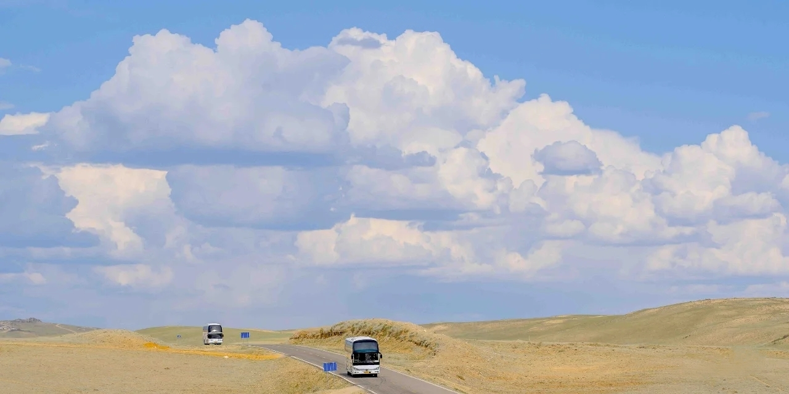

生活需要热情 否则只是日历上的天数
多拍照记录
那些或有趣或开心或伤心的时刻

最近的那些时刻记录
“快看我画的可爱的小人”
“好像你呀”
“是嘛，好像是有点诶，发型和脸型确实和我差不多”
“你这真的是给自己画了个自画像”
长发时候的样子
下课在湖边和朋友一起拍照
风刚好过来
在从图书馆回去的路上
遇到了可爱的小黄鸭兄弟，不过他们的家人没有在身边
和朋友一起带着他们去找寻 未果
室友提议带回宿舍 否决
放他们回到原来的地方，准备第二天再过来
在色彩匮乏的备忘录中完成
但是貌似效果还不错
可能是参照原图的原因
晚上上完课去到卖东西的老板那
三个人牵着老板的两只狗狗逛校园
中途一只狗狗挣脱了绳子去追大鹅
室友只能去追狗
所以形成了湖边比较神奇的一幕
人☞ 狗☞ 鹅
还是大三的我路过
虽然那天的风很大
但仍旧阻挡不了他们拍照的决心
不过多长时间拍照的可能就是我们了
那天雨可大了
不过窝在家里的我，看到了朋友圈里别人发的彩虹
好像是弟弟的学校？
在学校待着的我，有点想回家了(๑•́ωก̀๑)